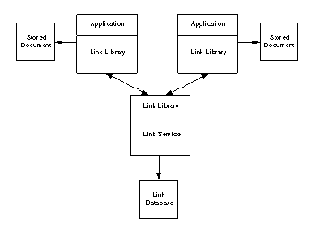

Hypermedia – Back-end Requirements
Back-end Requirements
The hypermedia engine would provide functionality such as linking, annotation, backtracking, filtering, and overviews on behalf of the back-end. The back-end should provide the following functionality:
- Provide specific information about its structure and its applications’ documents.
- Bridge laws must be written by developers. This could be done through a bridge law editor instead of writing predicate logic.
- Back-ends should provide control information and interpretive mechanisms along with the objects that are sent through messages. For example, objects that have to serve as link markers could be tagged.
- Back-ends should support hypermedia engine commands same as the front-end (command lists and context sensitive information).
- Back-end should incorporate a standard document interchange standard such as ODA or SGML.
Similar to Intermedia’s Link Engine and Bieber’s Hypermedia Engine, Sun’s Link Service offers an extensible protocol to create and maintain relationships between autonomous front-end applications [Pearl, 1989]. Similar to the approaches seen earlier, editing and storing of data objects is managed by independent applications which also provide some amount of front-end operations on links. The Link Service stores only the representations of the nodes rather than the nodes themselves. Thus, the definition and granularity of nodes are left to the individual applications. Also, the storage of node data is independent of the storage of link data.
The Link Service makes it easier for applications to add hypertext functionality by providing a simple protocol, a shared back-end or link server, a library, and utilities to manage the link database (See Figure 6.2). Applications communicate with the link server through the Link Service protocol. This service allows independent applications to integrate linking mechanisms into their standard functionality and become part of an extensible and open hypertext system. Existing text and graphics editors can be integrated into such a framework without any modifications. Due to the separation of node and link data, the Link Service does not provide version control, node content editors, concurrent multi-user access, or other forms of data integration.

Figure 6.2: Link Service – An Architecture for Open Hypertext [Pearl, 1989].
Some of the issues involved in developing such an open hypertext system include the following [Pearl, 1989]:
- The User Interface for the creation and management of links should be consistent with the editors provided by the individual applications.
- Since the Link Service and the applications are separate processes decisions must be made about sharing/dividing the responsibility for exception handling and user dialogs.
- The Link Service should detect and remove dangling links, either implicitly or explicitly. Implicit removal can happen when a user tries to follow a link from its valid end to its invalid end by suggesting to the user to remove the link. Explicit removal can happen, through a link garbage collection mechanism, by tracking links, validating nodes and removing invalid links.
- While versioning of data objects can be left to the individual applications, the Link Service must still handle the versioning of links. However, the consistency of a versioned hypertext cannot be guaranteed if nodes are versioned separately from links.
- Unstructured documents such as ASCII files cannot be handled elegantly since they are not uniquely indexed nor do they carry semantics.
- The issue of traversing links across networks and locating objects located at remote sites is very important due to performance and cost factors. Also, decisions have to be made about where on the network should the Link Service process be located. Another related issue is the invocation of an application which may not be currently running although the user is following a link to a node managed by that application.